Game Engine II - 6주차 2교시: 레벨 디자인 원칙과 Modeling Mode 블록아웃 (학생용)
관련 문서
| 관계 | 문서 |
|---|---|
| 강의 계획서 | 강의계획서: Game Engine II |
| 1교시 교안 | 6주차 1교시: 콜리전과 시네마틱 컨셉 개발 |
레벨 디자인 원칙을 이해하고, Modeling Mode 블록아웃으로 레벨 구조를 직접 잡을 수 있습니다.
1교시 복습
- 1교시에서 콜리전, 시네마틱 영상 분석, 컨셉 개발을 다뤘습니다.
- Ninety Days 영상 속 환경이 멋있었던 이유 — 앞에 요소가 있고, 중간에 주인공 구조물이 있고, 멀리 배경이 있는 구조 덕분입니다.
- 2교시에서는 그 '왜 멋있는지'를 원칙으로 정리하고, Modeling Mode 블록아웃으로 직접 레벨 구조를 잡는 방법을 배웁니다.
레벨 디자인 3원칙
원칙 1: 구성 — Composition
화면 안에 무엇을 어디에 배치할지 정하는 것입니다. 사진의 구도와 같은 개념입니다.
가장 기본적인 규칙은 3분할 법칙입니다.
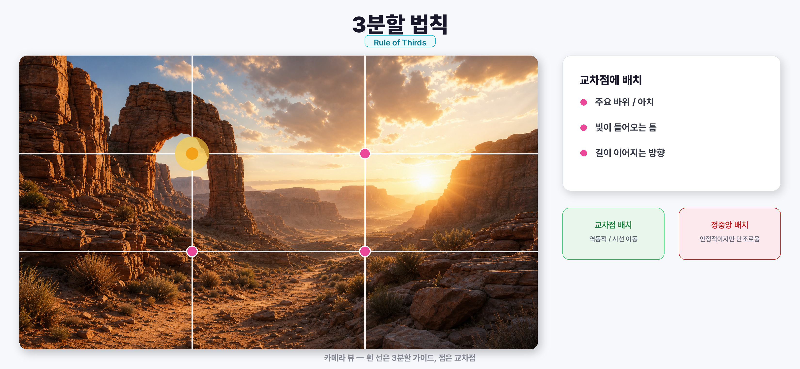
- 화면을 가로 3, 세로 3으로 나누면 교차점이 4개 생깁니다.
- 여기에 가장 눈에 띄는 요소를 놓으면 자연스럽게 시선이 갑니다.
- 정중앙 배치는 안정적이지만 단조롭습니다. 교차점 배치가 역동적입니다.
UE 뷰포트에서 3분할 가이드 확인:
- 뷰포트 왼쪽 상단 햄버거 메뉴(≡) 클릭
- Advanced Settings → Third Person Grid 또는 뷰포트 오버레이 설정 확인
- 또는 시네 카메라 배치 후 Filmback 설정에서 Composition Guide 활성화
가이드라인이 없어도 머릿속으로 화면을 3등분하면서 '교차점에 뭐가 있지?' 확인하는 습관을 들이면 됩니다.
원칙 2: 시선 유도 — Visual Flow
보는 사람의 눈을 원하는 곳으로 보내는 것입니다. 핵심은 소실점입니다.
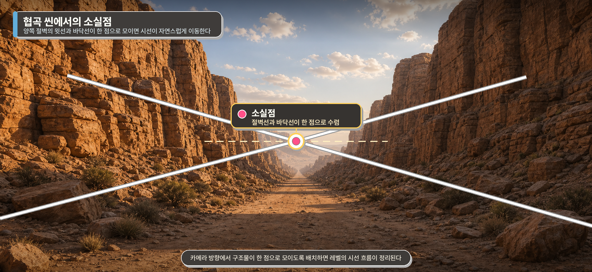
- 양쪽 절벽의 윗선/아랫선을 연장하면 한 점에서 만납니다. 이것이 소실점입니다.
- 사람의 눈은 자연스럽게 소실점을 향해 이동합니다.
- 소실점이 화면 밖에 있거나 여러 개가 충돌하면 산만해집니다.
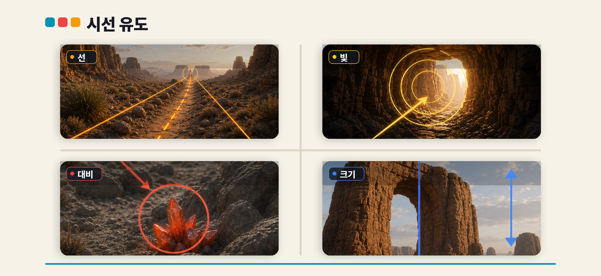
시선 유도 도구:
| 도구 | 설명 | UE에서 적용 |
|---|---|---|
| 선(Lines) | 길, 절벽 라인, 강물 등 방향성 형태 | 바위를 일렬이 아닌 사선으로 배치 → 시선이 따라감 |
| 빛(Light) | 밝은 곳으로 시선이 감 | 어두운 영역 끝에 Directional Light가 비치는 밝은 영역 배치 |
| 대비(Contrast) | 주변과 다른 색/밝기 | 회색 바위 사이에 초록 이끼나 밝은 모래 |
| 크기(Scale) | 큰 것이 먼저 눈에 들어옴 | 메인 구조물을 다른 에셋보다 2~3배 크게 |
네 가지를 조합하면 눈을 원하는 곳으로 보낼 수 있습니다.
원칙 3: 깊이감 — Depth
2D 화면에서 3D 공간감을 만드는 것입니다. 방법은 레이어를 나누는 것입니다.
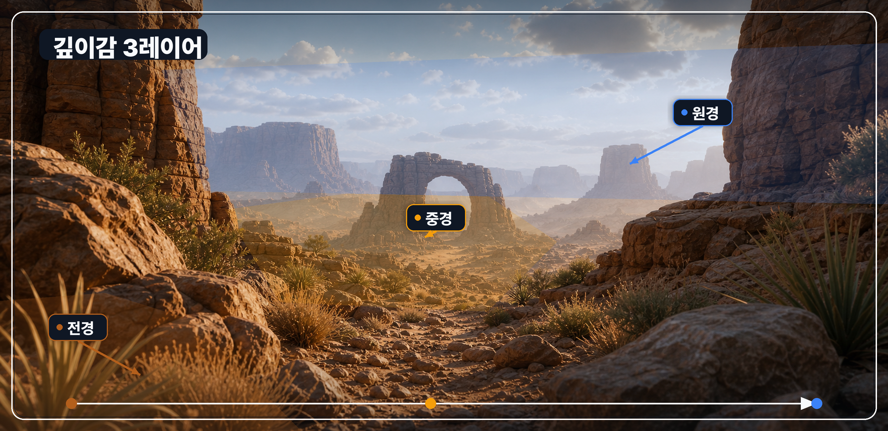
| 레이어 | 위치 | 역할 | UE에서 만드는 법 |
|---|---|---|---|
| 전경 | 카메라 바로 앞 | 프레임, 몰입감 | 카메라 앞에 풀, 나뭇잎, 바위 모서리 배치 |
| 중경 | 중간 거리 | 주 피사체, 이야기 중심 | 메인 구조물 (절벽, 건물, 아치 등) |
| 원경 | 먼 거리 | 세계관, 스케일감 | 에셋을 크게 스케일업해서 멀리 배치 + Fog로 대기감 |
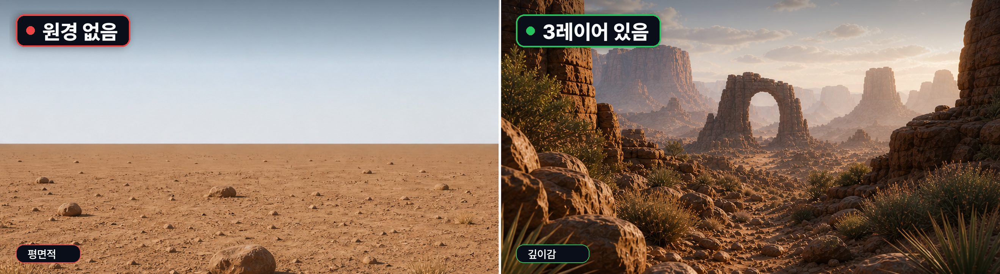
원경 만드는 3가지 방법:
- 에셋 스케일업 — 바위 에셋을 Scale 5~10배로 키워서 멀리 배치. 멀리서 보면 산처럼 보입니다
- Exponential Height Fog — 5주차에서 배운 Fog를 켜면 먼 곳이 자연스럽게 안개에 가려집니다 (대기 원근감)
- 스카이박스/배경 메쉬 — Fab에서 받은 큰 지형 에셋을 아주 멀리 배치하면 수평선 역할을 합니다
같은 에셋이라도 전경/중경/원경으로 나누기만 하면 공간감이 완전히 달라집니다.
Modeling Mode 블록아웃 워크스루
블록아웃이란
프로들은 에셋부터 놓지 않습니다. 먼저 기본 도형으로 레벨의 전체 구조를 잡는 것이 블록아웃입니다.
- 구조 먼저, 꾸미기 나중에 — 이 순서가 핵심입니다.
- 에셋이 예쁘면 구조가 별로인데도 '충분해 보인다' 하고 넘어가게 됩니다.
- 블록아웃 상태에서는 구조의 좋고 나쁨이 확 드러납니다.
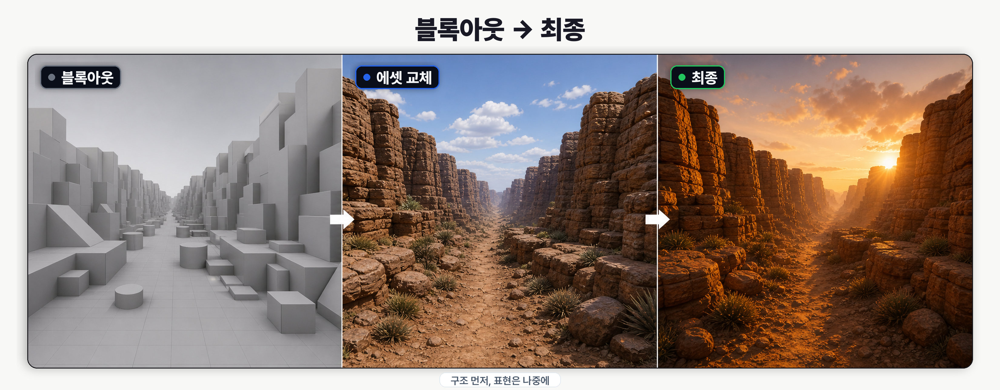
블록아웃만 잘 잡으면 나머지는 에셋을 바꾸고 라이팅을 입히는 것입니다.
참고 영상:
- Blockout and Asset Production in UE5 (Epic 공식): https://www.youtube.com/watch?v=R5TsbnW4fk8
- Griffitii — Speed Level Design 시리즈: https://www.youtube.com/@griffitii
Modeling Mode 소개
UE5에서 블록아웃에 쓸 도구는 Modeling Mode입니다.
Modeling Mode 열기:
- 에디터 상단 툴바 왼쪽 모드 선택 드롭다운 클릭
- 기본값 Select Mode → Modeling으로 전환
- 왼쪽 패널이 바뀌면서 Modeling 도구가 나타남
화면 왼쪽 Modeling 패널의 Create 탭에서 Box, Cylinder, Cone 같은 기본 도형을 생성합니다.
Modeling Mode vs BSP 브러시:
| BSP Brush | Modeling Mode | |
|---|---|---|
| 결과물 | BSP 볼륨 (레거시) | 스태틱 메쉬 (표준) |
| 수정 | 제한적 | 꼭짓점/모서리/면 편집 가능 |
| 콜리전 | 자동 생성 | 자동 생성 |
| 나중에 활용 | 에셋 교체 시 삭제해야 함 | 그대로 남겨두고 머테리얼만 바꿀 수도 있음 |
기본 조작:
- Create 탭 → Box 클릭 → 뷰포트에서 클릭하면 박스 생성
- 생성된 박스를 선택하고 W(이동), E(회전), R(스케일)로 조작
- 크기를 정밀하게 조절하려면 Details 패널에서 Scale 값을 직접 입력
도형을 만들 때 바닥에서 시작하세요. 공중에 떠 있으면 나중에 맞추기 힘듭니다.
협곡 블록아웃 실전
1교시에서 잡은 '사막 협곡 + 석양 + 경이로움' 컨셉을 블록아웃으로 만듭니다.
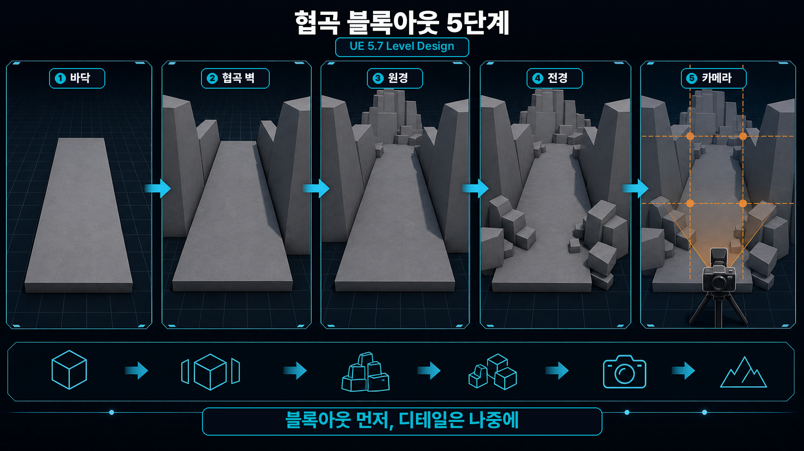
순서 1: 바닥 만들기
- Modeling Mode → Create → Box 클릭
- 뷰포트에서 클릭해서 박스 배치
- Details 패널 Scale: X: 50, Y: 30, Z: 0.5 — 넓고 얇은 바닥
- 위치를 원점 근처로 이동
바닥 도형은 넓고 얇은 박스로 시작합니다. 크기는 이후에 조절할 수 있으므로 대략적인 규모부터 설정합니다.
순서 2: 양쪽 벽 세우기
- Create → Box로 새 박스 생성
- Scale: X: 50, Y: 3, Z: 20 — 길고, 얇고, 높게
- 바닥 왼쪽 끝에 배치
- Ctrl+D 또는 Alt+드래그로 복제
- 복제한 벽을 바닥 오른쪽 끝으로 이동
양쪽 벽 도형은 카메라 방향에서 협곡처럼 보이도록 배치합니다. 완전히 평행하게 놓지 말고 약간 벌려보세요 (Y축 2~3도 회전). 입구는 좁고 안쪽이 넓어지면 시선이 자연스럽게 안쪽으로 빨려 들어갑니다.
순서 3: 원경 배치
- Create → Box로 큰 박스 생성
- Scale: X: 100, Y: 100, Z: 30 — 아주 크게
- 협곡 끝에서 500~1000 유닛 뒤로 배치
- 필요하면 하나 더 복제해서 높이를 다르게 배치
원경 도형은 협곡 끝에서 멀리 떨어진 곳에 크게 배치합니다. 과하다 싶을 만큼 크게 만들어야 멀리서 봤을 때 존재감이 있습니다.
순서 4: 전경 + 소실점 확인
- Create → Box로 작은 박스 2~3개 생성
- Scale: X: 1, Y: 0.5, Z: 2 — 카메라 옆에 놓을 작은 바위 역할
- 카메라 시작 위치 양옆에 배치
- 카메라 위치에서 확인: 앞에 작은 박스가 프레임 역할, 중간에 협곡, 멀리 원경 → 전경/중경/원경 3레이어 완성
- 3분할 법칙 확인 — 왼쪽 벽이 왼쪽 1/3 선에, 원경의 메인 산이 오른쪽 1/3 교차점에 있으면 좋은 구성입니다
맞지 않으면 지금 조절합니다. 이게 블록아웃의 장점입니다. 에셋으로 만들었으면 이동하기가 훨씬 번거롭습니다.
순서 5: 전체 확인
- 뷰포트에서 숫자 키패드 7 → 탑뷰 전환 (또는 뷰포트 좌상단에서 Top 선택)
- 위에서 보면 협곡 구조가 한눈에 보입니다
완성된 블록아웃은 탑뷰에서 카메라 위치, 양쪽 벽, 원경의 관계가 한눈에 보이는 상태입니다.
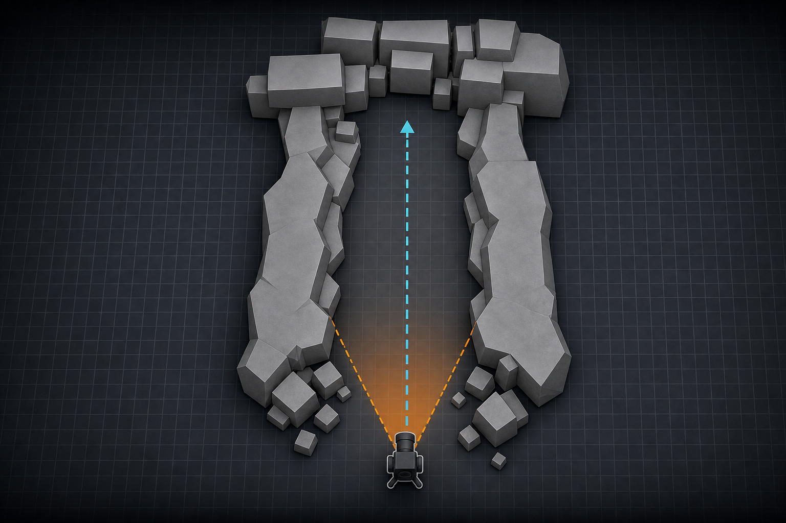
탑뷰에서 카메라 위치, 벽 각도를 한눈에 파악할 수 있습니다. 7주차 시네마틱 스토리보드에서도 이 탑뷰가 카메라 경로 계획의 기본이 됩니다.
흔한 실수 3가지
- 블록아웃 없이 에셋부터 배치 → 전체 구조를 놓치게 됩니다. 먼저 회색 도형으로 구조부터 잡으세요
- 에셋을 균일하게 나열 → 자연은 불규칙합니다. 크기, 간격, 회전을 다 다르게 하세요
- 카메라 방향을 안 정하고 만들기 → 카메라가 보는 방향만 잘 만들면 됩니다. 카메라가 보지 않는 영역은 텅 비어 있어도 문제 없습니다
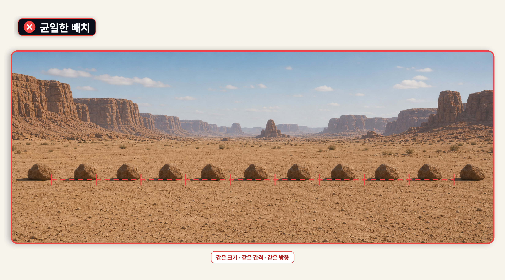
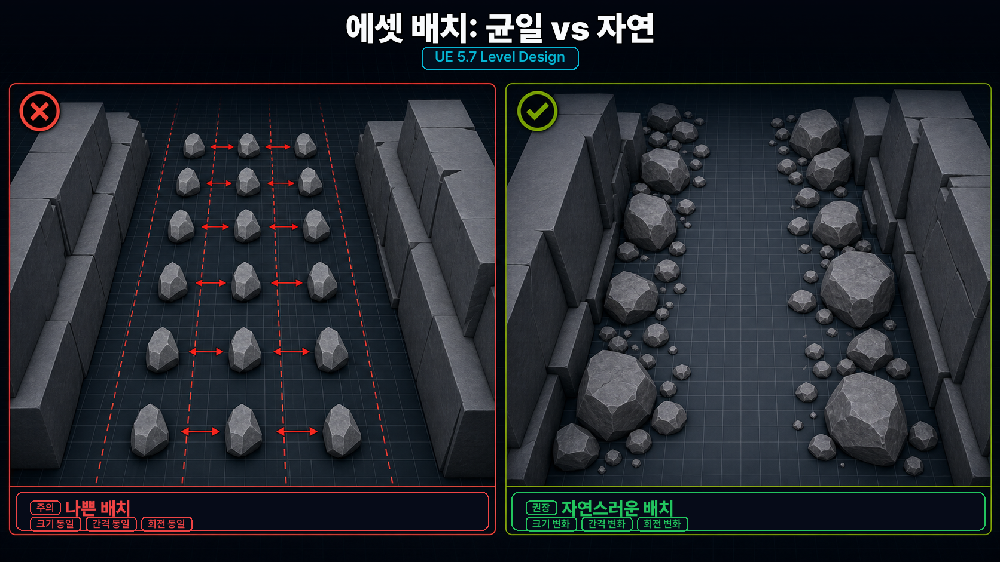
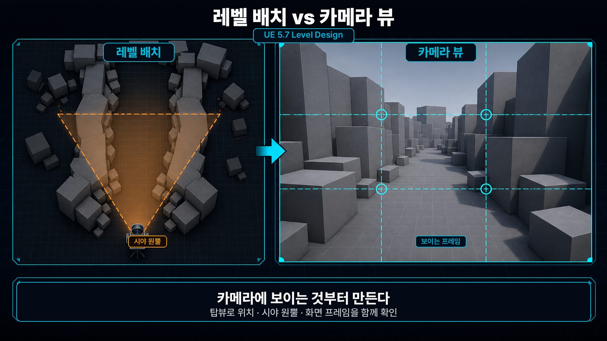
블록아웃에서 에셋 교체
블록아웃이 완성되면 에셋으로 교체하는 순서입니다.
- 블록아웃 도형 선택
- 근처에 Fab/메가스캔 에셋 배치
- 블록아웃 도형의 Hidden In Game 체크 — 게임에서는 안 보이지만 에디터에서 참고 가능
- 에셋의 크기와 위치를 블록아웃에 맞게 조정
블록아웃을 바로 지우지 마세요. Hidden In Game으로 숨겨놓으면 원래 구조를 참고할 수 있습니다.
실습 안내 + 정리
레벨 디자인 체크리스트
| 체크 | 항목 | 확인 방법 |
|---|---|---|
| 확인 | 컨셉이 정해졌는가? | 어디서, 언제, 어떤 느낌 세 단어 |
| 확인 | 레퍼런스가 있는가? | 최소 3장 |
| 확인 | 블록아웃으로 구조를 잡았는가? | Modeling Mode Box로 바닥/벽/원경 |
| 확인 | 소실점이 있는가? | 카메라 방향에서 시선이 한 곳으로 모이는지 |
| 확인 | 3레이어가 있는가? | 전경/중경/원경 |
| 확인 | 에셋이 불규칙하게 배치되었는가? | 크기, 간격, 회전이 다양한지 |
| 확인 | 콜리전이 있는가? | Show Collision으로 확인 |
3교시 실습
실습 목표: 컨셉을 하나 정하고, 블록아웃으로 구조를 잡고, 메가스캔 에셋으로 환경을 구성합니다.
추천 순서:
- 컨셉 정하기 — 어디서, 언제, 어떤 느낌 (3분)
- 레퍼런스 2~3장 수집 (5분)
- Modeling Mode로 블록아웃 — 바닥 → 벽 → 원경 → 전경 (10분)
- 에셋으로 교체/보강 (15분)
- 스크린샷 (2분)
- 블록아웃 단계에서 카메라 위치를 먼저 정하세요. 거기서부터 보이는 것만 만들면 됩니다.
- 같은 바위를 크기와 회전만 바꿔서 여러 개 놓으면 충분히 다양해 보입니다. 에셋 10개 받을 필요 없습니다.
제출물:
| 항목 | 내용 |
|---|---|
| 제출물 | 프로젝트 파일 + 뷰포트 스크린샷 3장 |
| 제출 기준 | 컨셉 일관성, 블록아웃 구조, 깊이감, 에셋 활용도 |
| 마감 | (마감일 안내) |
- 1교시: 콜리전 + 시네마틱 영상 분석 + 컨셉 개발 4단계
- 2교시: 레벨 디자인 3원칙(구성/시선유도/깊이감) + Modeling Mode 블록아웃 실전
- 1~6주차에 걸쳐 인터페이스, 머테리얼, 에셋, 라이팅, 콜리전, 레벨 디자인까지 배웠습니다. 이제 레벨을 만들 수 있는 모든 도구를 가지고 있습니다.
7주차에서 시네마틱 스토리보드를 배웁니다. 오늘 만든 레벨이 다음 주의 무대가 됩니다.